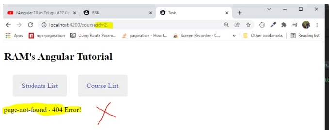
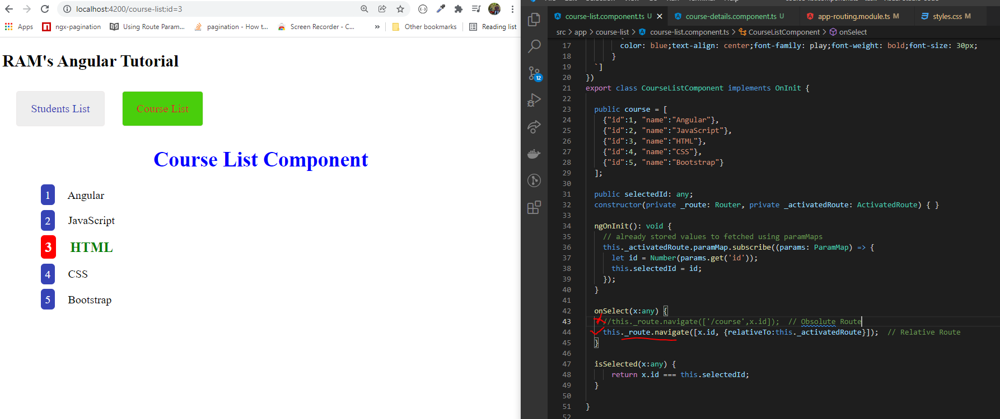

OPTIONAL ROUTE PARAMMAP
- Previous session, while constructing the URL's we are using the Absolute navigation . in future it is creating some issue like below(instead of previous screen it is showing page not found component page).

- To avoid those issues need to construct to relative navigation routings like below.
